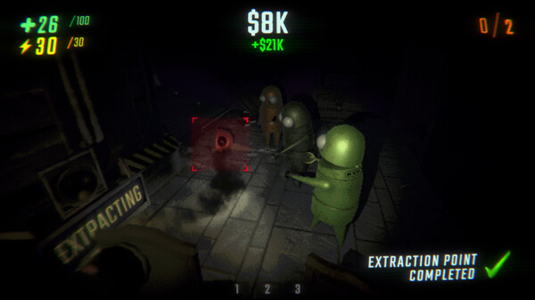
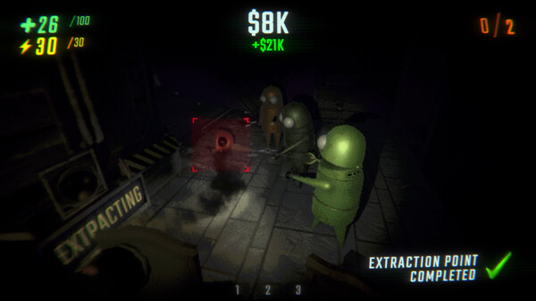
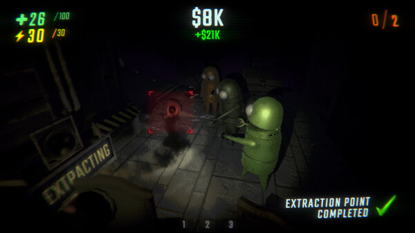

An online co-op horror game with up to 6 players.
Locate valuable, fully physics-based objects and handle them with care as you retrieve and extract to satisfy your creator's desires.
rating *****
single player
online co-op
genre: horror
devs: semiwork
releasedate: 26 feb 2025

os: windows 10
processor: Core i5 6600
memory: 8 GB RAM
graphics card: GTX 970
DirectX: Versie 10
Opslagruimte: 1 GB of free space
Steam ~ Meds ~ like ~ R.E.P.O. has an addicting gameplay loop that creates countless hours of screaming and laughing. Also, the devs did a great job on the monster designs, making me excited about future monsters and other new content. This is a must-buy for anyone into horror or simply looking for a fun coop game.
Steam ~ Lilceratops ~ like ~ Although this game gives me motion sickness after about 2-3 hours of playing, my friends and I still have so much fun everytime we play. I recommend not looking up anything up before you play, it makes the monster encounters funnier and more surprising. I also like that the layout of the rooms changes each time you play. The randomization of the three maps adds to the game's replayability.
Steam ~ azizfrek ~ dislike ~ i have 240+ hours in this game and i tell you its not worth wasting ur time on it :). if the game wants to kill you, you cant do nothing about it, i dont recommend it for single player. with ur friends its fun, when your alone its annoying as fuck. enjoy. One Star